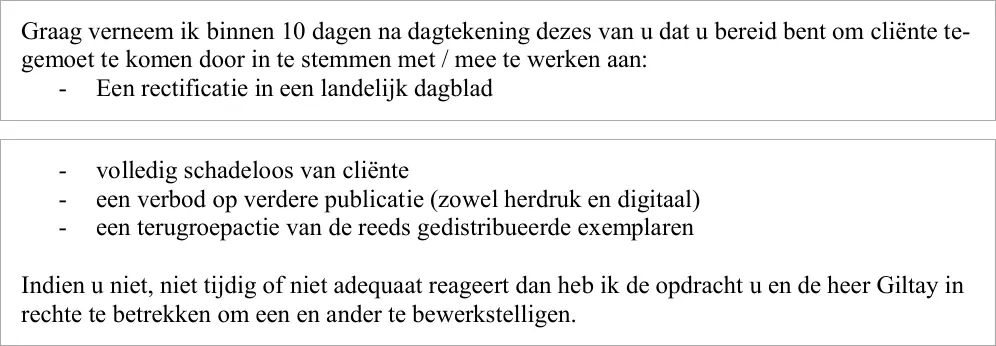

Bewijsstuk · Brief
DAS namens Barbara Overduyn aan uitgever SpeakEasy, sommatie, 24 juli 2015
De passage
“Graag verneem ik binnen 10 dagen na dagtekening dezes van u dat u bereid bent om cliënte tegemoet te komen door in te stemmen met / mee te werken aan: - Een rectificatie in een landelijk dagblad - volledig schadeloos van cliënte - een verbod op verdere publicatie (zowel herdruk en digitaal) - een terugroepactie van de reeds gedistribueerde exemplaren Indien u niet, niet tijdig of niet adequaat reageert dan heb ik de opdracht u en de heer Giltay in rechte te betrekken om een en ander te bewerkstelligen.” Pagina 2, laatste alinea, en pagina 3, eerste alinea. De regels zijn hier aaneengeschreven; ‘volledig schadeloos van cliënte’ staat zo in de brief.

Waarom dit document telt
Op 24 juli 2015 schreef rechtsbijstandsverzekeraar DAS namens Barbara Overduyn aan de uitgever van De doofpotgeneraal dat het boek haar eer en goede naam aantast. De brief noemt veertien punten die volgens haar niet kloppen, waaronder dat zij zou weten dat het fotorolletje van Srebrenica niet is mislukt maar bij de MID ligt. Hij verlangt een rectificatie, schadeloosstelling, een verbod op verdere publicatie en een terugroepactie; blijft een bevredigend antwoord uit, dan worden uitgever en auteur voor de rechter gedaagd. De brief is geschreven zeventien dagen nadat de Moeders van Srebrenica het boek aanhaalden in hun memorie van grieven van 7 juli 2015. De biografie noemt hem als de sommatie die in december 2015 tot het boek- en spreekverbod leidde.
Herkomst
- Document
- Sommatiebrief, drie pagina’s
- Van
- DAS, T.G.F. Lourents, namens Barbara Overduyn
- Aan
- Coen Borgman h.o.d.n. SpeakEasy Publisher & Agency
- Datum
- 24 juli 2015
- Kenmerk
- GDE.1.15.058624
- Onderwerp
- “uitgebrachte werk "de doofpotgeneraal" van de schrijver Edwin Giltay smaad / laster / schending eer en goede Barbara Overduyn”
- Afschrift aan
- Edwin Giltay, per e-mail
- Verzonden
- Per e-mail, met ontvangstbevestiging
- Taal
- Nederlands
- Pagina’s
- 3
- Bron
- dedoofpotgeneraal.
nl/ doc/ das.pdf - Zie ook
- Moeders van Srebrenica, memorie van grieven, 7 juli 2015Dagvaarding van Barbara Overduyn tegen Giltay, 2015Rechtbank Den Haag, vonnis van 14 december 2015 (ECLI:NL:RBDHA:2015:15050)
Aangehaald in: de biografie van de auteur.
Bewijsstukpagina: https://
Document: https://
Laatst gewijzigd 3 augustus 2026, geraadpleegd 9 oktober 2026.

Deze pagina is een bewijsstuk bij het boek De doofpotgeneraal van Edwin Giltay en de bijbehorende website.